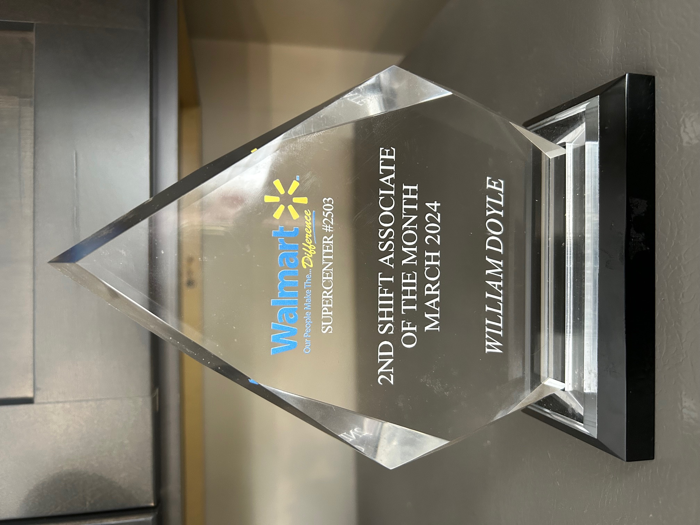

ONE HAND WASHES THE OTHER

As you can see here on this day I have 96 picks to do and it's a grocery walk. Fourty items were successfully shopped for so far. Now, I am in aisle 18 and need to shop for Honey Nut Cheerios as shown here. The description and the location are there. I have to goto section 3 and in space or modular 10. Once found, I scan the bar code on the package and put it in the correct tote or basket on my cart, and then goto the next item to shop. Speed is very important as we have to do many picks throughout the day and it's wise to manage our time intelligently. If the item is out of stock, we hit the Item not found button and it goes into a list called Exceptions. That person is tasked to find that item in the back room in storage to get it and put the remaining items from that storage box from the back room on the stores shelf so it's there for the next person when he or she is shopping.
FOLLOWING THE PROPER PATH

As you can see here this is Aisle 18 in the store and this is where the cereal is mostly stored. It's the home location. It takes a team to be successful doing this. It starts with the corporate staff as they advertise this cereal item in the store's circular. That alerts the customer to order online or buy this delicious item. Next, the online shopper picks out the item at the correct location (show above) and everyone is happy. All you need now is the milk, haha. It's like to me, one hand washes the other. We are all part of one successful team. This was the idea when I was at ShopRite also. With me being at the store level, I totally understand the process and when I go back to a retail corporate situation again, I will have the knowledge and confidence to be even more effective because of my ShopRite and Walmart employment shopping experience.
MORE FUN STUFF

Pictured here you see my T.C. which stands for "Touch Computer". It's a hand held device that's the most important tool to have to complete my job as an online shopper. On this day, April 25, 2025 was a busy one. I worked the 9am to 6pm shift and I was credited (as shown) in getting 916 individual items that day. The 140.72 tracks how fast I shopped that day. This number is good. The store wants a 100.00 or more score at least for this. For this day, I went on 19 completed pick walks and got done 89 orders picked. Drops happen at the top of every hour as a bunch of us travel around the entire store to complete everything. Sometimes, our store can get around 8,000 picks on a busy day. We also help customers who are shopping with any questions or concerns daily, if needed. We have a lot of talented workers in the department and the unofficial moto is: Many hands make light work.
THE 3 STEPS OF ONLINE SHOPPING

(STEP 1.) The first step would be for the customer to go online using the stores website and pick out anything she or he wants to buy in the entire store. (STEP 2.) The next step would be for me to shop for those requested items and collect them in blue containers or totes which are on a pushing cart. (pictured here) I would transport those items to the proper place for storage within the Pick up department of the store. (STEP 3.) The last step would be to get those items to the customer, either by delivery to their home or a pick up (by the customer where they come into the store) at a set time.
IN MARCH OF 2024, I won a 2nd Shift Associate of the Month Award for the 11am - 8pm time as online shopper.

This was voted by the Store Managers for strong work results and demonstrating teamwork within the store as well. (award here)
BACK TO HOME PAGE...
have a great day! 😁 ...Enter